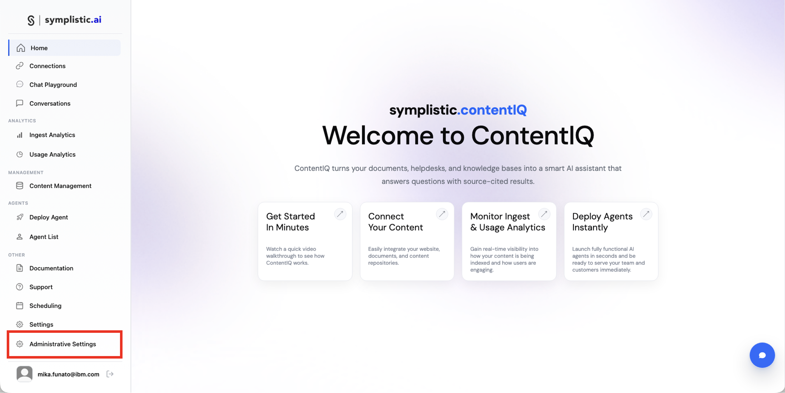
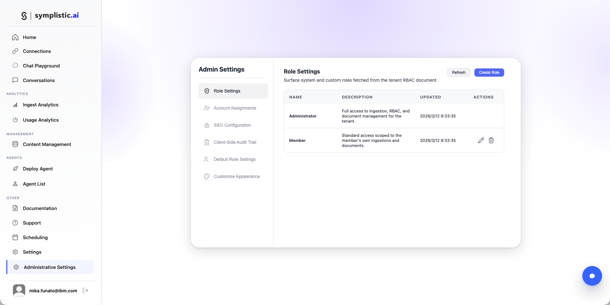
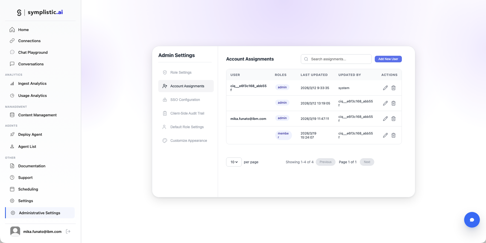
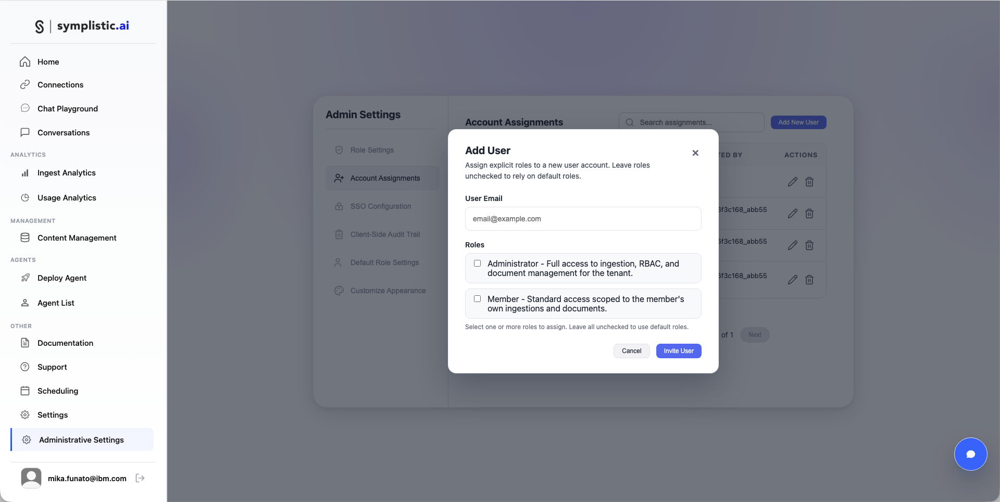
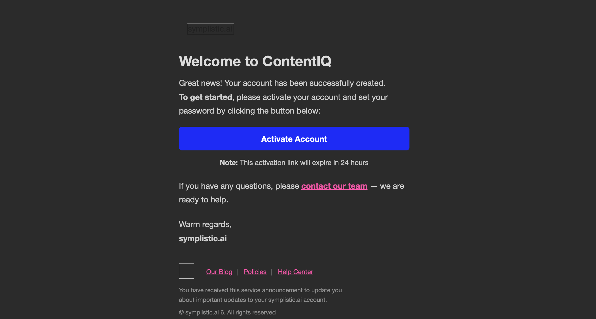

ContentIQとは
ContentIQは、symplistick.aiが提供する、RAG構築ソリューションである。
主な機能
- 自然言語による高度な検索
- ドキュメント理解とエンティティ抽出
- パッセージ検索とランキング
- 多言語サポート
ContentIQの起動確認
- ContentIQにアクセス https://contentiq.symplistic.ai
- 初めてログインする場合は、watsonx Orchestrateの認証情報(APIキーとURL)の入力を求められるので、控えたものを入力する
- ContentIQのホーム画面が表示されたら、ログインが完了
管理者による設定
- ContentIQのHomeから、「Administrative Setting」をクリック
- 「Role Setting」では「Administrator」や「Member」など権限のレベルを設定できる
- 「Account Assignments」ではメンバーの追加や削除ができる。新規追加をするには、「Add New User」をクリック
- メールアドレスを入力し、適切なRoleを割り当てて「invite User」をクリック
- 追加したメンバーにはメールが届く。24時間以内にActivateする必要がある





セットアップ完了
おめでとうございます！すべての環境構築が完了しました。
セットアップした環境
- IBM Bob - AI開発アシスタント
- watsonx Orchestrate - AIエージェントプラットフォーム
- MCP統合 - BobとOrchestrateの連携
- ContentIQ - RAGシステム構築基盤
次のステップ：
これで、IBM BobとwatsonX Orchestrateを使ったAIエージェント開発の準備が整いました。 実際のエージェント開発を始めることができます。